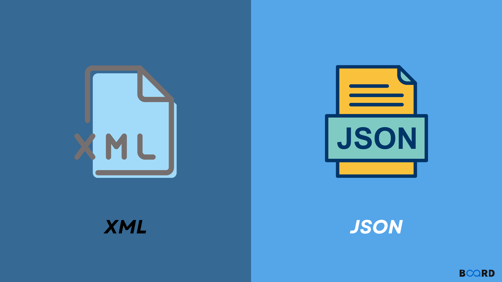

Webes adatkezelő környezetek
Tantárgy tematikája:
- XML kialakulása, XML szabvány elemei
- XDM modell elemei, XDM modell készítése, XML tervezésének módszertana
- DTD szabvány, DTD létrehozás módszertana
- XMLSchema működése, elemek áttekintése
- XMLSchema haladó elemei, tervezési módszertan
- A SAX felület adatmodellje és működése, API elemek
- DOM modell áttekintése
- A DOM API elemek áttekintése, alkalmazása
- Az XSLT transzformációs szabvány elemei, XPath szabvány eleme
- XSLT haladó elemei, függvények készítése
- JSON modell elemei
- JSON és XML összevetése, JSON séma kezelése
- JSON API programozása

Forrás: https://www.boardinfinity.com/blog/xml-and-json/